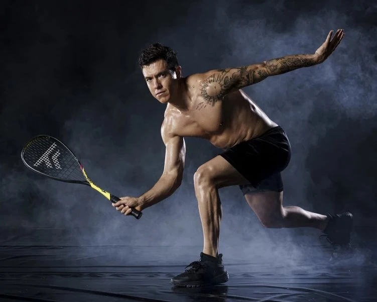

El squash es un deporte de raqueta que se juega en una cancha cerrada donde dos jugadores golpean una pequeña pelota contra las paredes. Este deporte es conocido por su intensidad, ya que exige gran agilidad, resistencia y estrategia para ganar puntos al rival. Conoce más sobre el squash aquí.
Mejores Jugadores 2024
- Ali Farag - Egipto
- Paul Coll - Nueva Zelanda
- Mostafa Asal - Egipto
- Diego Elias - Perú
- Karim Abdel Gawad - Egipto
Mejor Jugador Colombiano
Nombre: Miguel Ángel Rodríguez
Nacido: Bogotá, Colombia
Títulos: 30 títulos internacionales
Historia: Miguel Ángel Rodríguez ha sido una leyenda del squash en Colombia y América Latina, logrando el prestigioso título del British Open en 2018.